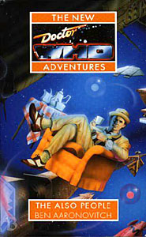

|
The Also People
|
BASIC PLOT DOCTOR COMPANIONS MATERIALISATION CIRCUIT In the clearing again, since the TARDIS has been spending the novel one picosecond in the future. PREPARATORY READING CONTINUITY REFERENCES Pgs 8-9 Bernice's experience of excavating the Dyson sphere, seen here in flashback, was mentioned in Lucifer Rising, pg 150. Pg 9 "The group sociologist, the only Indigenous Terran amongst them, said it was unlikely that a species that had evolved on a planet would ever feel completely comfortable on an artificial world." Indigenous Terrans were first seen in Doctor Who and the Silurians, where they were erroneously named. This was later corrected to the equally erroneous Eocenes. For most of the NAs, they were known as Earth Reptiles, a name which mostly stuck. Pg 11 "Some of the worst scum I ever dealt with in the Undertown looked just like you and me." Original Sin. Pg 13 "'Venusians didn't eat hamburgers,' he said, 'at least not while I was there.' 'What did they eat?' asked Roz. 'Each other mostly,' said Bernice." Venusian Lullaby. Pg 14 "'Random coordinates,' said Bernice. 'You promised!'" Which he did, in Head Games, but later changed his mind, unbeknownst to Benny and the others. Pg 16 "Taren Capel: A case study in robophilia. The man who wanted to be a robot when he grew up." The Robots of Death. "What if the machines had taken over, as they had on Movella?" The Movellans were seen in Destiny of the Daleks and their precursors were seen in A Device of Death. "They were all tired. The events on Detrios were too close." Head Games. Pg 20 "'Ah,' said the Doctor, 'that rather depends on your definition of human.'" The third Doctor said almost exactly this in The Time Warrior. Pg 21 Reference to Ace. Pg 22 "It should have been Kat'laana, but she was what? Dead? Not born yet?" Kat'lanna appeared in Head Games, albeit with different spelling. "It had happened to Ace on Heaven and to herself on King's Cross Station." Love and War, Transit. "'No, no. I'm not a part of anyone's machine.' Ace had said that, in Paris" Set Piece. Pg 23 "You're a liar and a user and quite possibly a murderer too. I don't wish to know you." We get a brief summary of Head Games. Pg 24 "Adjudicator Roslyn Inyathi Forrester" Roz's middle name changes back and forth between Inyathi and Sarah. This is eventually resolved in So Vile A Sin when it's started that she has both middle names. Pg 32 "On her last trip to the thirtieth century Bernice had been far too busy running for cover to notice details like that." Original Sin. Pg 33 "He remembered her dancing with the soldiers in the street outside M. Theirry's house in Paris." Set Piece. Pg 34 "The hologram displayed the characteristic flat and undifferentiated cells of the ship's invasive cellulose. Even in abstract representation they were coloured a virulent and unhealthy green. The Doctor's hand drifted uneasily to his left shoulder." Set Piece. "The Doctor said nothing, remembering the pain. The lawnmower smell. The ship dying. Ace shouting out in fear and anger. All those minds going into the dark. Paris burning." Set Piece. Pg 43 "There was a discolouration on the cuirass where it had been caught by a Kithrian fifty-megawatt laser" Uncertain reference. Pg 45 Reference to beppling (Original Sin). Pg 46 "I found things Mama, that you never dreamed of, the stories of Nomgqause, Mandela and Mbete." The relationship between the Forrester family and Nelson Mandela is explored further in Decalog 4. Pg 47 "'Grandfather,' the Doctor chuckled. 'I haven't been called that in a long time.'" Not since The Five Doctors (and before that The Dalek Invasion of Earth). Pg 52 "Thirty years before, the people had been involved in a war" We hear more about this war in Walking to Babylon. Pg 52 A number of the ships are named after New Adventures authors. These include the A-Lain (Andy Lane), !C-Mel (Andrew Cartmel), T-Di!x (Terrance Dicks) and (on page 255) the P-Cor (Paul Cornell). Pg 64 Reference to Roz's sister, Leabie, who we'll meet in So Vile A Sin. Pg 65 Reference to Martle, Roz's former partner (discussed at some length in Original Sin.) "She heard the sound of children laughing." A very similar phrase appears in Transit, describing the Doctor's reaction to Kadiatu and Blondie having sex. Pg 68 "One month later Roz discovered Martle taking bribes and opened up his throat with a vibroknife." Mentioned in Original Sin. But see Continuity Cock-Ups. Pg 76 Reference to a 1987 Johnny Chess album. Which matches the dates from Timewyrm: Revelation, although based on him being a toddler in 1976 in Face of the Enemy, that would make him about 14 when he records this LP. No wonder he later scored Tegan. Pg 77 Reference to Ace. Pg 78 Reference to Ace. Pg 84 Reference to Daleks. Pg 86 "It had been her fantasy when they'd been staying in the house on Allen Road that the Doctor had a secretarial service, one of those video-phone constructs that took the place of ansaphones in the early twenty-first century." The only time prior to this that Bernice stayed in the house on Allen Rd was during Warlock. Pg 89 Reference to Ace. Pg 90 "The spat with Roz bothered her; she had too many memories of what she thought of as the difficult period with Ace." This would be the alternate history arc, comprising Blood Heat through No Future. Reference to Daleks. Pg 91 "Should have destroyed it when I first realized, should have let Ace deal with it in Paris." Set Piece. "Old hologram chess set in the TARDIS attic, one whose pieces fought short doomed battles when they were taken. Played a game against Melanie, tinny little voices screaming in triumph and pain. Got so distracted that I lost the match. Scared to make the winning moves in case I lost a pawn. Lost them all in the end, mate in thirty-seven. Lesson in that but not a pleasant one." We didn't see this chess match there, but this might as well be a summary of Head Games and a general statement of the NA Doctor's ethos to boot. However, see Continuity Cock-Ups. "That dark 3 a.m. place with Nietzche talking about the abyss, superman and monsters. Davros's eyes staring back at me from the mirror." Staring into the abyss is a frequent theme of the NAs, most explicitly in The Left-Handed Hummingbird. "I condemned the Brigadier for sealing up the Silurians. Me, steeped in the blood of Skaro up to my elbows, who would have guessed that the Daleks had so much blood in them?" Doctor Who and the Silurians, Remembrance of the Daleks. "Promised Bernice a nice simple adventure this time; turn up somewhere and do what's right. Knew I was lying even as I set the co-ordinates. Never were any simple adventures, I was just too naive to realize it." Head Games References to the Master, Cybermen and Sontarans. Pg 96 "The treated fabric was smooth and slightly yielding like that biplane he'd flown in over the English Channel." Just War. Pg 102 "The French plane had better endurance" Just War. "'Have I ever told you,' asked the Doctor, 'how much I hate swimming?'" Silver Nemesis. Pg 106 "Machines didn't think like flesh and blood people, didn't obey the same imperatives that were hardwired into the messy lump of cold porridge that passed for data processing in an upright biped." The description of the brain as cold porridge was important in the novelisation of Remembrance of the Daleks. Pg 109 References to Daleks and Draconians. Pg 110 "The Doctor had once mentioned a World War IV, did they skip III and go directly to IV?" The Doctor mentions World War VI in The Talons of Weng-Chiang. "A soundless, painless detonation between her breasts, of falling into stagnant water." Forward reference to So Vile A Sin Pg 111 "PPPS - eat this message immediately after reading." Probably a reference to Roz eating someone's ID chip, as mentioned in Original Sin. Pg 120 "Adjudicator Truth by Hith's With Attitude" Original Sin. Pg 124 Reference to Ace. Pgs 141-142 "The family dead always danced, even the first Grandfather, whom she'd always suspected would muck up the foxtrot." The Brigadier. Pg 142 "She saw the patched uniform of the garde nationale, the spiny carapace of the cake monster" Transit. Pg 143 "Running past the football pitch, still showing the burn marks from the Angel Francine's visit." Transit. Pgs 148-149 References to Daleks, Cybermen and Movellans. Pg 152 "Ace said that Ship had changed her." Set Piece. Pg 153 "You're talking about Gods, aren't you?" The NA Gods include Time, Pain Death and so on, dating back to Timewyrm: Revelation. Pg 166 "It wasn't Paris, but for this one evening, iSanti Jeni would do." The Doctor said that only in Paris could one truly relax, in City of Death. "I am the model of a very modern UN General" Possibly a reference to the Brigadier (who's a general in Head Games. Also references a very famous line from the Gilbert and Sullivan operetta The Pirates of Penzance (I am the very model of a modern Major General). Pg 170 Reference to Heaven (Love and War). Pgs 171-172 "Clattering on iron rails through the drizzle grey landscape of France. Chris trying to explain to all those backward primitives that he wasn't her master." Toy Soldiers. Pg 180 Oblique reference to Ace. Pg 182 References to Sontarans and Rutans (but see Continuity Cock-Ups). Pg 185 Cheekily, we get the Doctor Who knock-knock joke and it's actually funny. This is almost certainly its only appearance ever in the books. Pg 187 "A great and unexpected sadness welled up in him, a regret that he couldn't just juggle and play the spoons and pull coins out of ears of children." Partly a reference to Sylvester McCoy's more usual talents, partly a brilliant comment on the nature of the Doctor, this gets mentioned again in Return of the Living Dad (page 62), although rather less poetically, when the Doctor states outright "What I'd really like to do is busk." Oh well. Pg 191 "I tried to imagine I was telling Alistair about Kadiatu" The Brigadier later finds out about her in Happy Endings. Pg 192 "She knocked holes in the fabric of space-time, almost destroyed the universe." Set Piece. Pgs 199-200 "I didn't know you were familiar with Dalek poetry. [...] It reads far better in the original machine code." This is the infamous Dalek poetry discussion that led to considerable furore around the conception of War of the Daleks. Pg 206 "That could have been why the TARDIS couldn't translate the written form; she remembered it had had trouble with Osiran heiroglyphics." Set Piece. Pgs 222-224 A Dalek, Cyberman and Sontaran appear in Benny's dream, which also references the Rutans and Davros. Pgs 226-227 "A memory reached out and put a hand upon her shoulder; so vividly did she feel it that she unthinkingly dropped the capsules and reached to take Guy's hand in her own." Sanctuary. Pg 232 "Moire had said that, Moire the Dalek killer." Love and War. But see Continuity Cock-Ups. Pg 233 "'See any pockets of marsh gas?' 'No.' 'Any handy minefields?' 'No.'" Carnival of Monsters, The Sea Devils. Pg 238 "AM!xista lay in the cool shade of the tree and vowed never ever to be cruel to a humanoid with a hangover again." The Pirate Planet (and also The Hitchhiker's Guide to the Galaxy). Pg 247 Reference to a Cyberband. Pg 251 "A stitch with twine saves time" A rare late example of the early seventh Doctor's malapropisms, seen in Time and the Rani and briefly in Delta and the Bannermen. Pg 263 Reference to the respiratory bypass system (Pyramids of Mars). Pg 268 "She ran a finger down the skin of her face, remembering France" Toy Soldiers. Pg 277 Reference to Daleks. Pg 278 Reference to Ace. OLD FRIENDS AND OLD ENEMIES NEW FRIENDS AND NEW ENEMIES The drone aM!xitsa, who returns in Happy Endings and The Dying Days. saRa!qava, who returns in Happy Endings. There's also someone called !X who may or may not be the same individual featured in Down (page 237). He's a drone here, so probably not, but you never know with the People. !C-Mel, who returns in several Benny NAs, from Ghost Devices through Twilight of the Gods, although only in Tears of the Oracle do we learn his new identity, Clarence. The B-Aaron, who returns in Where Angels Fear and Tears of the Oracle and is mistakenly killed in a continuity cock-up in Twilight of the Gods. Also Dep, feLixi, beRut, kiKhali, the S-Lioness.
CONTINUITY COCK-UPS PLUGGING THE HOLES [Fan-wank theorizing of how to fix continuity cock-ups] FEATURED ALIEN RACES Pgs 8-9 An Indigenous Terran (Silurian) and the Builders, an insect-like race, in flashback. FEATURED LOCATIONS IN SUMMARY - Robert Smith? |
|
 |